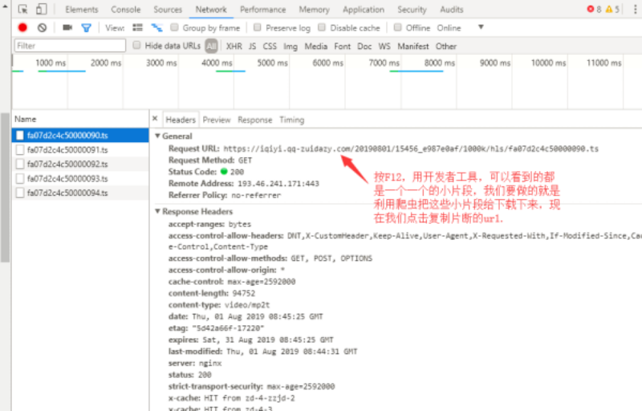

1、from multiprocessing import Pool
2、import requests
用windows命令行终端
pip install requests

##描述：该脚本目前适合下载爱奇艺，腾迅视频VIP视频
##作者：小刘
##电话：有事请写评论
##注意：只适全python爬虫的学习者，不适合专门去看电影的爱好者
##导入的两个模块，其中requests模块需要自行下载
from multiprocessing import Pool
import requests
##定义一个涵数
def demo(i):
##定义了一个url,后面%3d就是截取后面三位给他加0，以防止i的参数是1的时候参数对不上号，所以是1的时候就变成了001
url="https://vip.okokbo.com/20180114/ArVcZXQd/1000kb/hls/phJ51837151%03d.ts"%i
##定义了请求头信息
headers={"user-agent":"Mozilla/5.0 (Windows NT 10.0; WOW64) AppleWebKit/537.36 (KHTML, like Gecko) Chrome/49.0.2623.221 Safari/537.36"}
##构建自定义请求对象
req=requests.get(url,headers=headers)
##将文件保存在当前目录的mp4文件中，名字以url后十位数起名
with open('./mp4/ {}'.format(url[-10:]), 'wb') as f:
f.write(req.content)
##程序代码的入口
if __name__=='__main__':
##定义一个进程池，可以同时执行二十个任务，不然一个一个下载太慢
pool = Pool(20)
##执行任务的代码
for i in range(100):
pool.apply_async(demo, (i,))
pool.close()
pool.join()
（